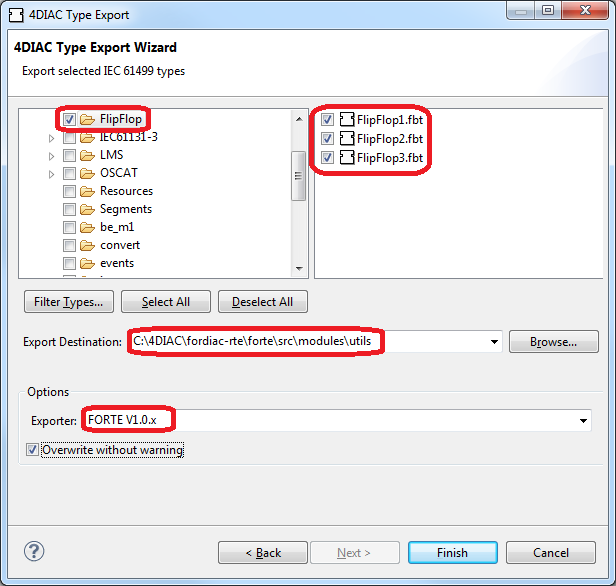

All new function blocks have to be exported and build into your FORTE after their internals have been defined. For that purpose select all function blocks which are supposed to be exported, right click and choose Export. The Export Wizard opens:

Under 4DIAC select 4DIAC Type Export and press Next. The 4DIAC Type Export Wizard will appear. Here you can modify your Function Block selection if desired. Enter the export destination (directory) of your FORTE source to export the Function Blocks into it, normally: <path to>/src/modules/<FB group name>. Under Options choose the FORTE export version using FORTE V1.0.x and press Finish.
Consider that your Function Block will not be available within FORTE until it has been compiled into your forte.exe. Please see Add FB Type to FORTE on how to include your new FBs to the FORTE build and MS Visual Studio or Eclipse on how to compile FORTE.